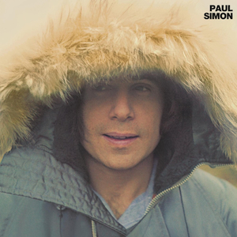
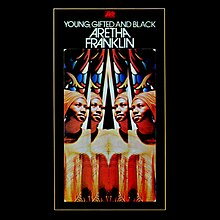
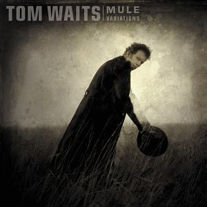
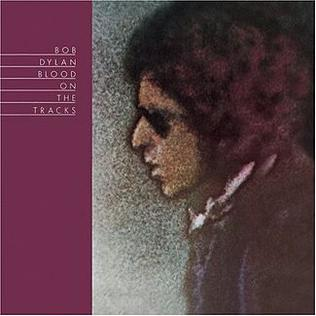
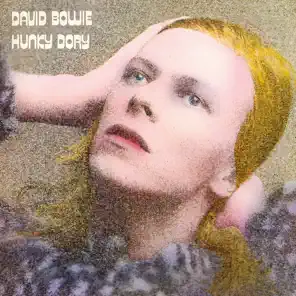
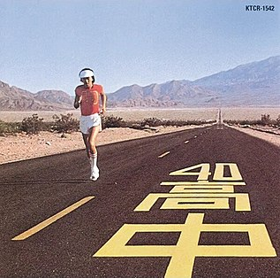
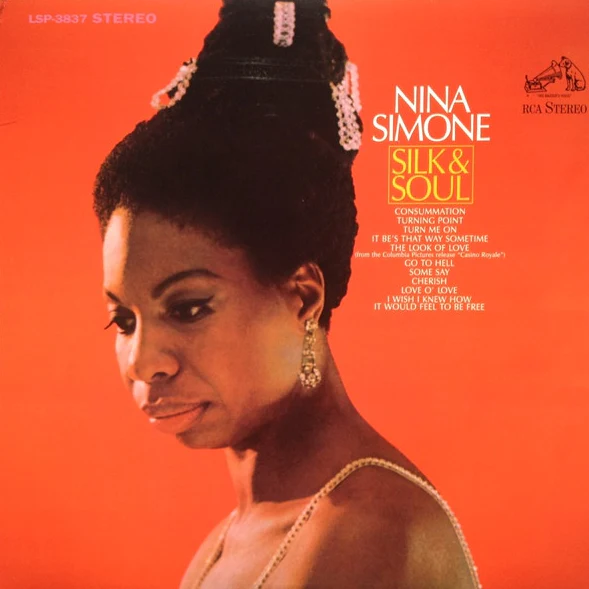
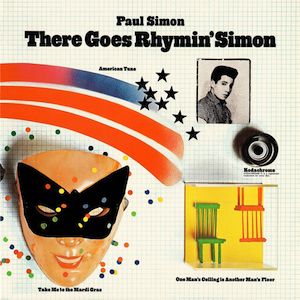
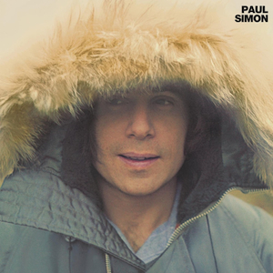
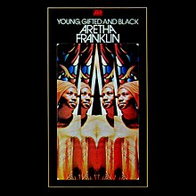
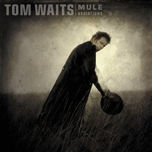
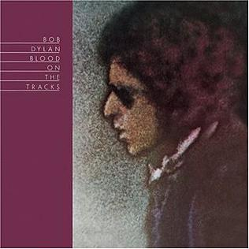
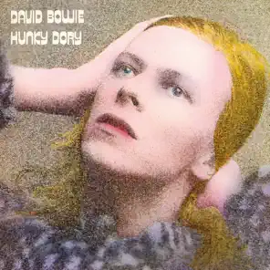
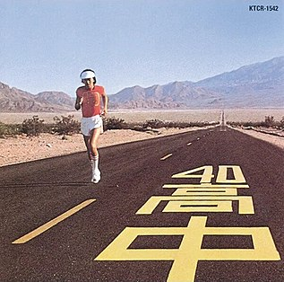
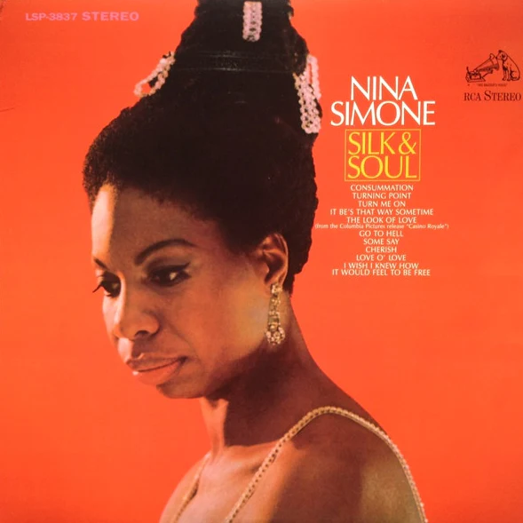
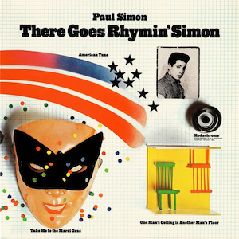
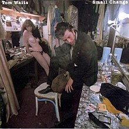
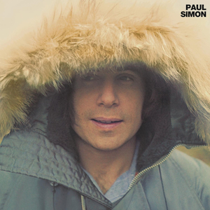
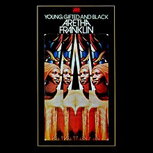
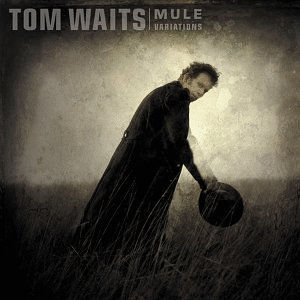
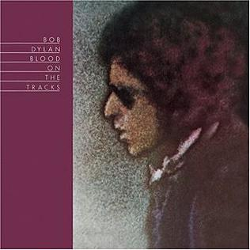
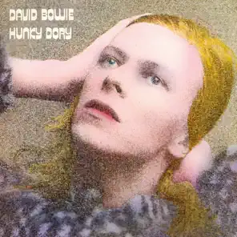
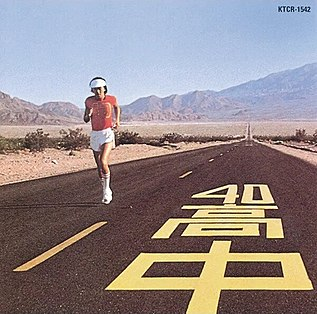
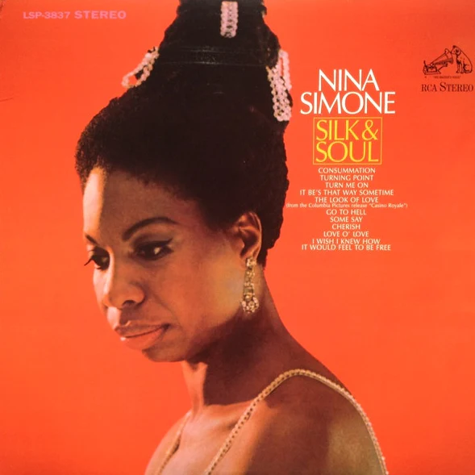
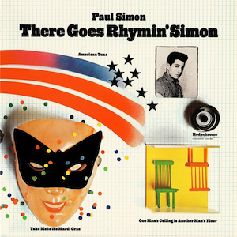
Some years ago I created a virtual instrument using a model B Steinway I had available to me. If you happen to use the DAW Reason, in this zip file you'll find an .sxt instrument compatible with Reason, along with all the 416 individual clip recordings of a piano from my hometown. Below are some audio samples of a robot (credits to Doug McKenzie for the midi files) playing it.
for gearheads: KSM 137 overheads, TLM102s close-miked, thru a couple Pheonix preamps modded inside an API lunchbox. All converted with a MOTU a/d.
Georgia on my Mind
For Sentimental Reasons
My Funny Valentine
Some required viewing. Taken from lectures at the Royal Conservatory by the late great Barry Harris (left: a discussion of and-beats, playing "out"; right: jabs at George Sheering, McGill, and wide voicings).